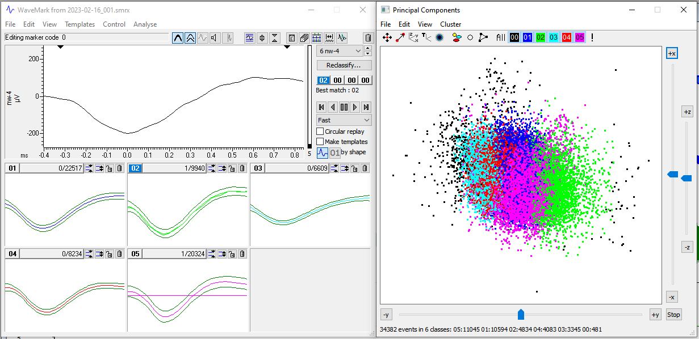

3 Spike sorting
We’ll cover how to spike sort using two programs: 1) Spike2 (written by Tony Lapsansky) and 2) Neuralynx (written by Eric Press).
The function of spike sorting is to isolate action potentials from the background voltage signal. These methods use the shape of the waveform to detect and distinguish the spiking activity of each neuron recorded by an electrode.
3.1 Spike2
Written by Tony Lapsansky, February 24, 2023
These instructions assume that you have been given a Spike2 recording file (extension .smrx) and asked to spike sort.
Spike2 includes a detailed description of the program, accessible by clicking
Help → Index

Spike2
3.1.1 File naming conventions:
Use the name structure
YEARMODA_sequence_investigatorSave data in the corresponding directory
“C:\InvestigatorName\ephys\YEAR-MO-DA”
3.1.2 Spike sorting with Spike2
- Open the main
Spike2file for the recording. This file should have the extension.smrx. - Apply a digital high pass filter, if needed. Note: if the
data were collected with the high pass filter set at greater than 100 Hz (no LFP
signal) then proceed to step 3.
- Right click on the raw data channel (typically Ch1) and select
FIR Digital Filters…. We want to use an FIR filter rather than an IIR filter as the latter can introduce a variable time lag in the resulting data (see Spike 2Help→Index→Digital Filterfor full explanation). - Under the pull down menu for
Filter, change the filter fromExample low pass filtertoExample high pass filter. - Select the
Show Detailsbutton in the bottom right. - Adjust blue slider change the filter length. Shift the slider until
the coloured dots above the slider from red to yellow to green. This removes
wobbles in the data. Use the minimum level (~1019) to achieve green.
Fine adjustments can be made just under the slider.

- Hit
Apply - Set
Destinationto the next available channel (typically Channel 4) - Click
Okay - Close the filtering window. You are given the option to save the filter. This is unnecessary.
- Right click on the raw data channel (typically Ch1) and select
- Setting the threshold for spike identification
- Right click on the filtered channel and select
New WaveMark - Clear previous templates if any are present. To do so, select the trash can icon within each template. These may be present from a previous session.
- Locate your cursor position, indicated by the vertical dashed line in the main window (typically found at time 0)
- Slide the dashed line horizontally through the trace to observe potential spikes as determined by the default upper and lower thresholds.
- Right click the upper bound marker (the upper horizontal
dashed line in the
WaveMarkwindow) and selectMove Away. We will rely on the lower bound to identify spikes for sorting, as the activity above baseline is typically closer in magnitude to the background. - Slide the dashed line horizontally through the trace to observe potential spikes as determined by the lower threshold alone.
- Adjust the lower threshold to catch spikes of interest. This threshold will vary based based on the distance between the electrode and the neuron, the quality of the isolate, and the level of background noise. Values between 50 mV and 200 mV are typical.Set the lower bound so that spikes of interest are included and ambiguous spikes are excluded.
- Right click on the filtered channel and select
- Designing the spike template
- Move the cursor to a characteristic spike. In the upper window, you will see the provisional template. Click and hold on the trace in the upper window and drag it to the first available spot in the lower, template window.
- To set parameters for spike sorting, click on the button just to the left
of the trash can icon (on the top half, upper right of the
WaveMarkwindow). This is the “parameters dialog” button. This opens a template settings window. - For the line
Maximum amplitude change for a matchenter a value between10and20. This will allow a spike that fits a template to vary in maximum amplitude by up to 10-20%. - For the line
Remove the DC offset before template matching, confirm that the box is checked. This means that Spike2 will account for abrupt shifts in the signal baseline before template matching. This is a stop-gap for any issues with the digital high pass filter. - Click
OK.
- Spike sorting
- Back in the
WaveMarkwindow, make sure that the boxCircular replayis unchecked. If checked, spike sorting will loop indefinitely. - Ensure that the vertical cursor on the main window is at time zero (or the first spike) so that no spikes are missed.
- Back in the
WaveMarkwindow, make sure that the boxMake templatesis checked. If unchecked, only spikes corresponding to the provisional template will be identified. We want to let spike2 help us to identify potential multi-unit activity. - Hit the play button ▶️, which is called “run forward”. Spike sorting will
proceed for several minutes. Each identified spike will appear briefly
in the
WaveMarkwindow and will be assigned to a template. In this image, I have selected options for
In this image, I have selected options for OverdrawandShow template limits
- Back in the
- Merge, delete, and save templates
- After spike sorting has completed, select
New Channelon theWaveMarkwindow to place the spike sorted data in the next available channel (typically, Channel 5) - Close the existing
WaveMarkwindow. - Right click on the spike sorted channel and select
Edit WaveMark. - Within the
WaveMarkwindow, go the pull down menuAnalyseand selectPrincipal components. SelectOK. This opens a window containing a principal component analysis of all spikes colored by their assigned template. - Rotate around all three axes to determine if there is one, two, or more clusters. In theory, each cluster corresponds to a single neuron. Often, spikes are categorized into multiple templates, but realistically correspond to the activity of a single neuron.
- Identify templates that should be deleted and those that should be merged. We will delete spikes corresponding to templates that are sparse and peripheral.
- Delete the template(s) in the
WaveMarkwindow by selecting that template’s trash can icon. - Merge templates by dragging them into the same window
- Hit the
reclassifybutton in theWaveMarkwindow to commit these changes to the data in the main window.  In this example, we have good evidence from the PCA to merge these five templates.
- After spike sorting has completed, select
- Export the spike-sorted data
File → Export As- Select
.mat(matlabdata) - Use the same filename and location but with the
.matextension. - Hit
Save - Select
AddforAll Channels - Click
Export - Click
OK(this will take several minutes)
Note: May need to select an earlier MATLAB file convention to work with R.
3.2 Neuralynx
Written by Eric Press, November 11, 2022
- Spike sorting database:
- Check the column labelled
Sorting statusto find days of recording that arecuedmeaning they are ready to be sorted. Recordings are cued for spike sorting once information about the recording has been added to the database. This includes observations from the day’s recording, whether the electrode position was moved from the previous recording, and the stimulus condition for each recording. The recordings are stored at the following location and are named/organized by date and time of recording:
Computer/LaCie (D:)/Eric’s data/nlx_recordings
- Check the column labelled
- Filtering the raw traces (CSCs):
- Use the
NlxCSCFilteringtool on any Windows machine to run a band-pass filter on inputCSCfiles. - Choose all the
CSCfiles for a given recording, change thePreAppendfield tospfilt, which stands for spike-filtered and adjust theDSPfiltering fields to match the image to the right. This selects for frequencies in the raw traces where spikes will be found, but removes low frequency (LFP) and high frequency components of the traces.
- Use the
- Examine the filtered traces:
- Take a closer look at the filtered traces (Open in
Neuraviewon any Windows machine) and determine which channels are likely to have isolatable spikes and how many distinct spikes there might be. It helps to keepNeuraviewopen when setting thresholds in the next step.
- Take a closer look at the filtered traces (Open in
- Spike detection from filtered traces:
- Use the
CSCSpikeExtractortool on any Windows machine to detect spikes above or below a given µV) threshold. The units displayed in the program will be AdBitVolts which are simply 10.92x from the µV value. - Based on the filtered traces, within
CSCSpikeExtractor, set the spike extraction properties (Spike Extraction -> PropertiesORCtrl+P) as shown above. TheExtraction Valueis set to 10.92x the µV you chose by viewing the filtered traces. - Press
Ctrl+Sto extract spikes from the selected file at the desired settings. The resulting file will be placed in theextracted spikesfilter on theDesktop. - Create subfolders in the recording folder for each threshold and move the extracted spikes at each threshold into the appropriate folder. These spike-detected files will be used for spike sorting in the next step.
- If it helps with detecting real spike waveforms while
eliminating noise, run recordings through spike detection at
multiple threshold (positive or negative) such that only all
putative neurons are accounted for a minimal noise is
detected.

- Use the
- Spike sorting:
- Open the extracted spikes in
Spikesort3Don either the Neuralynx machine or another Windows machine that has an activeSpikeSort3Dlicence. You can also useTeamViewerto control the Neuralynx machine but this works much better with another Windows machine. - Press OK when the feature selection window appears. If you want to select alternate features to display, select them from the list provided. Sometimes it can be helpful to use PCA1 – 3 in isolating neurons but often it makes things more challenging.
- Using the 3D Plot, examine the clustering of spikes. Follow
the image below to aid in interacting with the 3D plot (MB =
the scroll wheel button i.e. middle mouse button). You can
change the features displayed on each axis with
Q/W,A/S, andZ/Xrespectively. Also,Ctrl+Pbrings up a window that allows you to change the size and opacity of points on the plot (I findsize = 2,alpha = 0.5works well to improve visual definition of the clusters). If distinct clusters are difficult to see, find the combination of 3 features that produces the most noticeable clustering or the greatest spread of points in the space. The features displayed in the 3D plot are shown at the top left of the plot (i.e. X(3) Height # # # #). Use those features for the next step.
- Run
KlustaKwik(Cluster → Autocluster using KlustaKwik) and select the 3 features that generate the most clearly separable clusters on the 3D view – often, the first 3 (Peak,Valley,Energy) do a decent job. Change theMaxPossibleClustersto10before pressingRun. The remaining settings should match the image below.
- Following calculations, use the
Waveformwindow and the 3D plot to group the distinct clusters into what you believe are waveforms produced by distinct neurons. Use the number keys to highlight distinct clusters andCtrl+Mto merge clusters together.Ctrl+Ccopies the selected cluster and can be used to split a cluster into 2 if you believe portions of the cluster belong to distinct putative neurons. This step takes some practice. You can useCtrl+Zto undo only one move. Otherwise, you may need to exit without saving and start again at step 4. Save withCtrl+Soften and click OK to overwrite the file. - Once you are satisfied with the waveforms left, note how many
there are, and whether it seems possible that some of the
groups belong to the same neuron. Consider what you know about
excitable membranes to make these decisions. Fill out the
Spike Sorting Databasewith the information used to reach this point. This includes, the threshold(s), # of clusters, # of putative neurons (often 1 less than the # of clusters because it would be a stretch to include the smallest amplitude waveform as a distinct, separable neuron), and any else to note from performing sorting. - Save each cluster to its own spike file
(
File → Save Multiple Spike Files) - Open the separate spike files you just created, along with the
original filtered trace in
Neuraview. Scroll along the recording and examine if the sorting you performed seems believable. Do the spikes in different rows really seem like they’re different in the filtered trace? Do some spikes not seem like real spikes? If anything seems amiss, make the appropriate merges inSpikeSort3Dbefore proceding. - Export the relevant data from the sorting. Perform the
following:
File → Save ASCII Timestamp FilesFile → Save Multiple Spike FilesFile → Save ASCII Avg Waveforms- Also, save the file itself with
Ctrl+S
- Lastly, bring up all the waveforms together on the waveform plot. Take a screenshot and save it to the folder where the extracted spikes (and now timestamps files) are stored.
- Open the extracted spikes in
- Moving sorted files to other locations:
- Once a chunk of recordings have been sorted, copy/paste the
entire recording file to Eric’s orange 1TB storage drive
(Lacie). Place them in the following folder:
Eric's data/sorted_recordings
- Once a chunk of recordings have been sorted, copy/paste the
entire recording file to Eric’s orange 1TB storage drive
(Lacie). Place them in the following folder:
4 Raw data and spike sorted traces
This is an R Markdown document. Markdown is a simple formatting syntax for authoring HTML, PDF, and MS Word documents. For more details on using R Markdown see http://rmarkdown.rstudio.com.
When you click the Knit button a document will be generated that includes both content as well as the output of any embedded R code chunks within the document. You can embed an R code chunk like this:
summary(cars)## speed dist
## Min. : 4.0 Min. : 2.00
## 1st Qu.:12.0 1st Qu.: 26.00
## Median :15.0 Median : 36.00
## Mean :15.4 Mean : 42.98
## 3rd Qu.:19.0 3rd Qu.: 56.00
## Max. :25.0 Max. :120.00
7 Direction tuning
This is an R Markdown document. Markdown is a simple formatting syntax for authoring HTML, PDF, and MS Word documents. For more details on using R Markdown see http://rmarkdown.rstudio.com.
When you click the Knit button a document will be generated that includes both content as well as the output of any embedded R code chunks within the document. You can embed an R code chunk like this:
summary(cars)## speed dist
## Min. : 4.0 Min. : 2.00
## 1st Qu.:12.0 1st Qu.: 26.00
## Median :15.0 Median : 36.00
## Mean :15.4 Mean : 42.98
## 3rd Qu.:19.0 3rd Qu.: 56.00
## Max. :25.0 Max. :120.00
8 Spatiotemporal tuning
This is an R Markdown document. Markdown is a simple formatting syntax for authoring HTML, PDF, and MS Word documents. For more details on using R Markdown see http://rmarkdown.rstudio.com.
When you click the Knit button a document will be generated that includes both content as well as the output of any embedded R code chunks within the document. You can embed an R code chunk like this:
summary(cars)## speed dist
## Min. : 4.0 Min. : 2.00
## 1st Qu.:12.0 1st Qu.: 26.00
## Median :15.0 Median : 36.00
## Mean :15.4 Mean : 42.98
## 3rd Qu.:19.0 3rd Qu.: 56.00
## Max. :25.0 Max. :120.00
9 Histological verification
This is an R Markdown document. Markdown is a simple formatting syntax for authoring HTML, PDF, and MS Word documents. For more details on using R Markdown see http://rmarkdown.rstudio.com.
When you click the Knit button a document will be generated that includes both content as well as the output of any embedded R code chunks within the document. You can embed an R code chunk like this:
summary(cars)## speed dist
## Min. : 4.0 Min. : 2.00
## 1st Qu.:12.0 1st Qu.: 26.00
## Median :15.0 Median : 36.00
## Mean :15.4 Mean : 42.98
## 3rd Qu.:19.0 3rd Qu.: 56.00
## Max. :25.0 Max. :120.00
{kind=link}